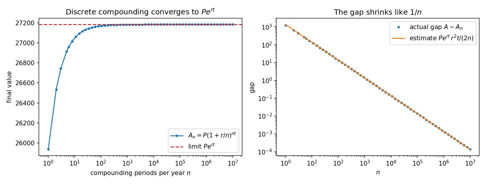
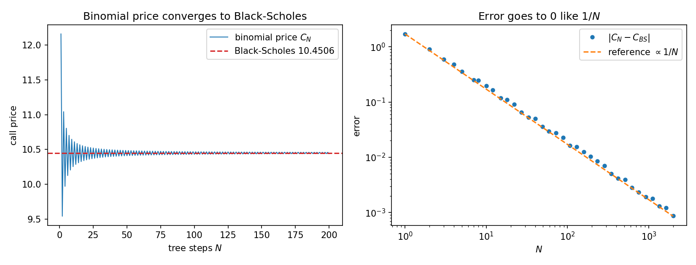
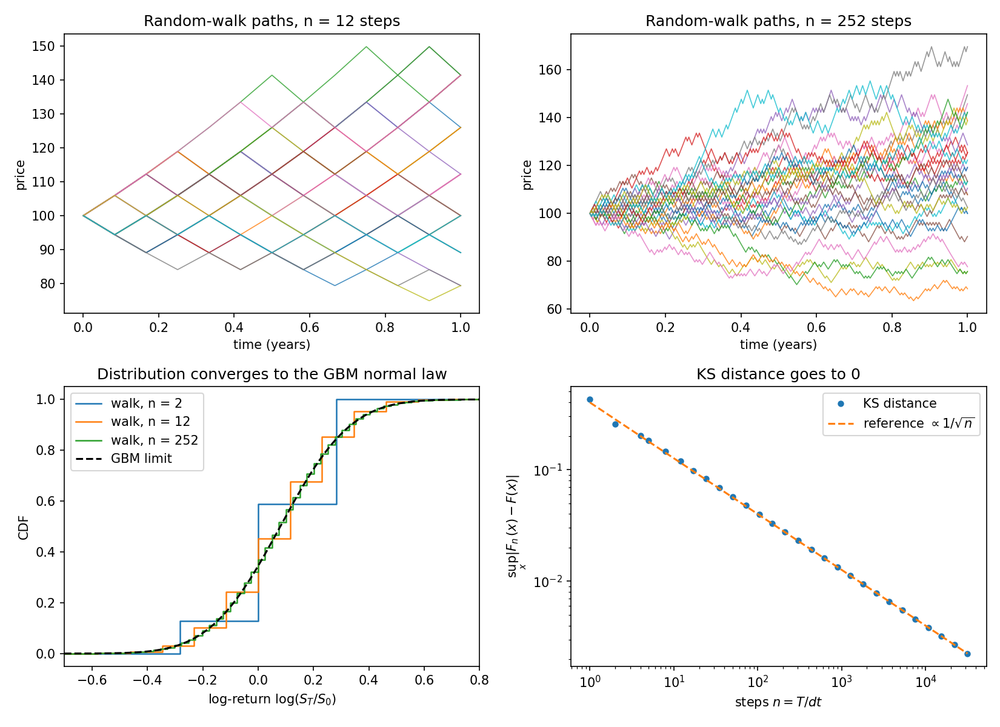
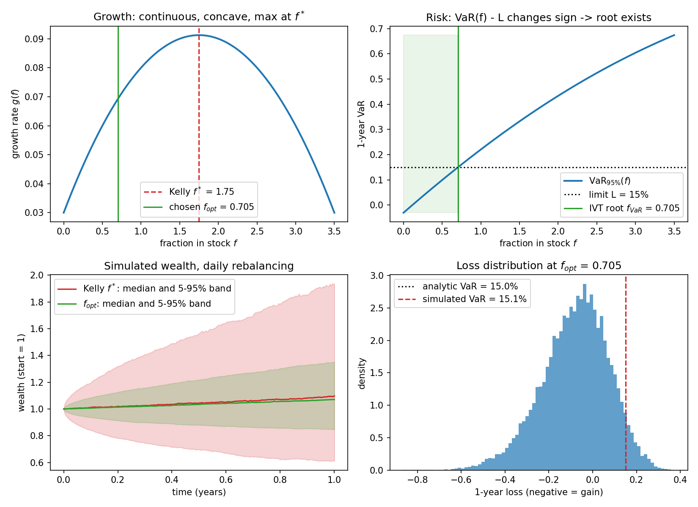
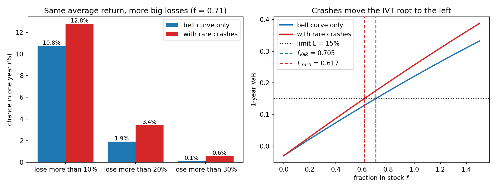
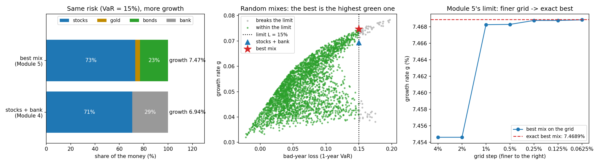

The question. A saver can keep money in a risk-free account paying \(r = 3\%\) per year, or invest in a stock index with expected return \(\mu = 10\%\) and volatility \(\sigma = 20\%\). What fraction \(f\) of the savings should go into the stock so that wealth grows as fast as possible, while respecting the rule “with 95% confidence, do not lose more than 15% in one year”?
The answer (derived in Part V): \(f_{opt} = 0.705\) — put 70.5% in the stock and 29.5% risk-free. If rare crashes can happen (Part VI): 61.7%. With gold and bonds available too (Part VII): about 73% stocks, the rest mostly bonds.
The method. Real finance is discrete (interest paid monthly, prices quoted tick by tick, portfolios rebalanced daily). We let the step size go to zero — a limit — and obtain continuous models with closed-form expressions. Then continuity (the Intermediate Value Theorem) guarantees the optimal allocation exists, and bisection computes it.
Parameters used throughout.
| Module | Parameters |
|---|---|
| 1 Compounding | \(P = 10{,}000\), \(r = 10\%\), \(t = 10\) years |
| 2 Options | \(S = K = 100\), \(r = 5\%\), \(\sigma = 20\%\), \(T = 1\) |
| 3–4 Market | \(\mu = 10\%\), \(\sigma = 20\%\), \(r = 3\%\), \(T = 1\) year, \(\alpha = 95\%\), loss limit \(L = 15\%\), leverage cap \(f_{max}=2\) |
| 4b Crashes | rate \(\lambda = 0.1\) per year, size \(J = -25\%\) |
| 5 More assets | gold \(\mu=\ln1.05\), \(\sigma=15\%\); bonds \(\mu=\ln1.045\), \(\sigma=6\%\); correlations 0 (stocks–gold), −0.2 (stocks–bonds), 0.3 (gold–bonds); no borrowing |
All rates are continuously compounded (Module 1): \(\mu=10\%\) means an average gain of \(e^{0.1}-1=10.5\%\) a year, \(r=3\%\) means 3.05%.
This part collects every theorem the project relies on, so that later parts can quote them.
Definition 1.1 (limit). A sequence \((a_n)\) converges to \(a\), written \(a_n\to a\), if for every \(\varepsilon\gt 0\) there is \(N\) such that \(|a_n-a|\lt \varepsilon\) for all \(n\ge N\).
Definition 1.2 (continuity). \(h\) is continuous at \(x\) if for every \(\varepsilon\gt 0\) there is \(\delta\gt 0\) with \(|y-x|\lt \delta \Rightarrow |h(y)-h(x)|\lt \varepsilon\).
Lemma 1.3 (sequential continuity). \(h\) is continuous at \(x\) if and only if \(x_n\to x\) implies \(h(x_n)\to h(x)\). In words: a limit can be moved inside a continuous function, \[ \lim_{n\to\infty} h(x_n) = h\Big(\lim_{n\to\infty} x_n\Big). \]
We use Lemma 1.3 constantly, typically with \(h=\exp\): to find \(\lim e^{x_n}\) it suffices to find \(\lim x_n\).
Theorem 1.4 (squeeze; monotone convergence). (a) If \(b_n\le a_n\le c_n\) and \(b_n,c_n\to a\), then \(a_n\to a\). (b) An increasing sequence that is bounded above converges (completeness of \(\mathbb R\)).
Lemma 1.5 (logarithm bounds). For every \(u\gt -1\), \(u\neq 0\): \begin{equation} \frac{u}{1+u} \;\lt \; \ln(1+u) \;\lt \; u. \label{eq:logbounds}\end{equation}
Lemma 1.6 (Taylor expansion). For \(|u|\lt 1\), \[ \ln(1+u) = u-\frac{u^2}{2}+\frac{u^3}{3}-\cdots = u-\frac{u^2}{2}+O(u^3), \qquad e^{u} = 1+u+\frac{u^2}{2}+O(u^3). \]
Notation: \(O(u^k)\) means “bounded by a constant times \(|u|^k\) for small \(u\)”.
Definition 1.7. \[ h'(x) = \lim_{\Delta\to 0}\frac{h(x+\Delta)-h(x)}{\Delta}. \] The fraction is the difference quotient (slope of a secant line); its limit is the slope of the tangent.
Second-derivative test / concavity. If \(h''(x)\lt 0\) for all \(x\), then \(h\) is strictly concave, \(h'\) is strictly decreasing, and any point with \(h'(x^*)=0\) is the unique global maximum.
Theorem 1.8 (Intermediate Value Theorem, IVT). Let \(h:[a,b]\to\mathbb R\) be continuous with \(h(a)\lt 0\lt h(b)\) (or the reverse). Then there exists \(c\in(a,b)\) with \(h(c)=0\).
Geometric meaning: a continuous graph cannot get from below the axis to above it without crossing it. Continuity is essential — a function with a jump can skip over 0.
Theorem 1.9 (Extreme Value Theorem). A continuous function on a closed bounded interval \([a,b]\) attains a maximum and a minimum.
Algorithm. Start with \([a_0,b_0]=[a,b]\), \(h(a)h(b)\lt 0\). For \(k=0,1,2,\dots\): let \(m_k=(a_k+b_k)/2\). If \(h(a_k)h(m_k)\lt 0\) set \([a_{k+1},b_{k+1}]=[a_k,m_k]\), otherwise \([a_{k+1},b_{k+1}]=[m_k,b_k]\).
Theorem 1.10 (convergence of bisection). If \(h\) is continuous on \([a,b]\) with \(h(a)h(b)\lt 0\), the midpoints \(m_k\) converge to a root \(c\) of \(h\), and \[ |m_k-c|\le \frac{b-a}{2^{k+1}}. \] Hence to reach accuracy \(\text{tol}\) it suffices to take \(k\ge \log_2\!\big((b-a)/\text{tol}\big)\) steps.
In our project, \([0,2]\) with tolerance \(10^{-12}\) needs \(\log_2(2/10^{-12})=40.86\) — i.e. 41 steps, exactly what the program prints.
Normal distribution. \(Z\sim N(0,1)\) has density \(\varphi(z)=\frac{1}{\sqrt{2\pi}}e^{-z^2/2}\) and CDF \(\Phi(z)=P(Z\le z)=\int_{-\infty}^z\varphi\). \(X\sim N(m,s^2)\) means \(X=m+sZ\). \(\Phi\) is continuous and strictly increasing, and \(\Phi(-z)=1-\Phi(z)\).
Quantile. For \(q\in(0,1)\) the quantile \(z_q=\Phi^{-1}(q)\) is the unique solution of \(\Phi(z)=q\). Existence follows from the IVT, uniqueness from strict monotonicity. We need \(z_{0.95}=1.644854\).
Quantiles and monotone maps. If \(\psi\) is strictly increasing then the \(q\)-quantile of \(\psi(X)\) is \(\psi\)(\(q\)-quantile of \(X\)).
Lemma 1.11 (lognormal moments). If \(X\sim N(m,s^2)\) then \(E[e^X]=e^{m+s^2/2}\).
Convergence in distribution. \(X_n \Rightarrow X\) if \(F_{X_n}(x)\to F_X(x)\) at every continuity point of \(F_X\).
Central Limit Theorem (de Moivre–Laplace / Lindeberg form). Sums of many small independent random steps, centred and scaled, converge in distribution to a normal law. In particular if \(J_n\sim\text{Bin}(n,p_n)\) with \(np_n(1-p_n)\to\infty\), then \(\frac{J_n-np_n}{\sqrt{np_n(1-p_n)}}\Rightarrow N(0,1)\).
Kolmogorov–Smirnov distance. \(D(F,G)=\sup_x|F(x)-G(x)|\). If the limit \(F\) is continuous, \(F_n\to F\) pointwise implies \(D(F_n,F)\to0\) (Pólya’s theorem).
Berry–Esseen theorem. For a normalised sum of \(n\) i.i.d. steps with finite third moment, \(D(F_n,\Phi)\le C/\sqrt n\).
Law of large numbers. Averages of i.i.d. variables converge to the mean: \(\frac1n\sum_{k=1}^n Y_k\to E[Y]\).
Invest \(P\) at nominal annual rate \(r\), compounded \(n\) times per year. Each period the balance is multiplied by \(1+r/n\); after \(t\) years there are \(nt\) periods, so \begin{equation} A_n = P\left(1+\frac rn\right)^{nt}. \label{eq:An}\end{equation} Question: what happens as compounding becomes more and more frequent, \(n\to\infty\)?
Theorem 2.1. \(\displaystyle\lim_{n\to\infty}P\left(1+\frac rn\right)^{nt}=Pe^{rt}\) for every \(r\gt 0\), \(t\gt 0\).
Proposition 2.2 (more frequent compounding always pays more, but boundedly). \(A_n\) is strictly increasing in \(n\) and \(A_n\lt Pe^{rt}\) for every \(n\).
So \((A_n)\) is increasing and bounded: it converges by monotone convergence, and Theorem 2.1 identifies the limit.
Using Lemma 1.6 with \(u=r/n\): \[ x_n = nt\left(\frac rn-\frac{r^2}{2n^2}+O(n^{-3})\right) = rt-\frac{r^2t}{2n}+O(n^{-2}). \] Let \(\varepsilon_n=rt-x_n=\frac{r^2t}{2n}+O(n^{-2})\). Then \begin{equation} Pe^{rt}-A_n = Pe^{rt}\big(1-e^{-\varepsilon_n}\big)=Pe^{rt}\big(\varepsilon_n+O(\varepsilon_n^2)\big) = \boxed{\,Pe^{rt}\,\frac{r^2t}{2n}+O\!\left(\frac1{n^2}\right)}. \label{eq:comperr}\end{equation} The gap shrinks like \(1/n\): doubling the compounding frequency roughly halves the remaining gain.
| compounding | \(n\) | \(A_n\) | gap \(Pe^{rt}-A_n\) | estimate \(\eqref{eq:comperr}\) |
|---|---|---|---|---|
| yearly | 1 | 25,937.42 | 1,245.39 | 1,359.14 |
| quarterly | 4 | 26,850.64 | 332.18 | 339.79 |
| monthly | 12 | 27,070.41 | 112.40 | 113.26 |
| weekly | 52 | 27,156.73 | 26.09 | 26.14 |
| daily | 365 | 27,179.10 | 3.72 | 3.72 |
| hourly | 8,760 | 27,182.66 | 0.155 | 0.155 |
| every minute | 525,600 | 27,182.82 | 0.0026 | 0.0026 |
The estimate is poor for \(n=1\) (where \(r/n=0.1\) is not small, so the \(O(n^{-2})\) term matters) and becomes essentially exact as \(n\) grows — itself an illustration of an asymptotic limit. On a log–log plot the gap is a straight line of slope \(-1\).

Real-life conclusion. Switching from monthly to daily compounding gains 108.68; from daily to continuous only 3.72. Continuous compounding is the natural idealisation of frequent compounding, and its effective annual rate is \(e^{r}-1 = 10.517\%\) for \(r=10\%\). Modules 2–4 use \(e^{rt}\) as the growth of the risk-free asset.
A European call option with strike \(K\) and maturity \(T\) gives the right (not the obligation) to buy the stock at price \(K\) at time \(T\). Its value at maturity is the payoff \((S_T-K)^+ = \max(S_T-K,0)\). A put pays \((K-S_T)^+\). Question: what is the fair price today?
In one step of length \(\Delta t\), the stock moves from \(S\) to \(Su\) or \(Sd\) (\(d\lt u\)); money in the bank grows by \(e^{r\Delta t}\). Let the option be worth \(V_u\) or \(V_d\) after the step. Build a portfolio of \(\Delta\) shares and \(B\) in the bank that pays exactly the same in both states: \[ \Delta Su+Be^{r\Delta t}=V_u,\qquad \Delta Sd+Be^{r\Delta t}=V_d. \] Subtracting, \(\Delta=\dfrac{V_u-V_d}{S(u-d)}\), and then \(B=e^{-r\Delta t}\dfrac{uV_d-dV_u}{u-d}\). If the option were priced differently from the portfolio, one could buy the cheaper and sell the dearer for a riskless profit (an arbitrage). So \begin{equation} V=\Delta S+B = e^{-r\Delta t}\big[\,pV_u+(1-p)V_d\,\big],\qquad p=\frac{e^{r\Delta t}-d}{u-d}. \label{eq:onestep}\end{equation} No arbitrage between stock and bank requires \(d\lt e^{r\Delta t}\lt u\), i.e. \(0\lt p\lt 1\): \(p\) behaves like a probability, called the risk-neutral probability. Remarkably, the real-world drift \(\mu\) does not appear.
Split \([0,T]\) into \(N\) steps, \(\Delta t=T/N\), with \(u=e^{\sigma\sqrt{\Delta t}}\), \(d=1/u\). After \(N\) steps with \(j\) up-moves the price is \(Su^jd^{N-j}=S e^{\sigma\sqrt{\Delta t}(2j-N)}\). Applying \eqref{eq:onestep} backwards through the tree (this is what the code does) is equivalent to the closed form \[ C_N = e^{-rT}\sum_{j=0}^{N}\binom Nj p^j(1-p)^{N-j}\big(Su^jd^{N-j}-K\big)^+ = e^{-rT}\,E\big[(Se^{X_N}-K)^+\big], \] where \(X_N=\sigma\sqrt{\Delta t}\,(2J-N)\) and \(J\sim\text{Bin}(N,p)\) counts up-moves.
Step 1: expand \(p\). With \(\delta=\sqrt{\Delta t}\): \(u=1+\sigma\delta+\tfrac12\sigma^2\delta^2+O(\delta^3)\), \(d=1-\sigma\delta+\tfrac12\sigma^2\delta^2+O(\delta^3)\), \(e^{r\Delta t}=1+r\delta^2+O(\delta^4)\). Hence \(u-d=2\sigma\delta+O(\delta^3)\) and \(e^{r\Delta t}-d=\sigma\delta+(r-\tfrac12\sigma^2)\delta^2+O(\delta^3)\), so \[ p=\frac12+\frac{r-\sigma^2/2}{2\sigma}\sqrt{\Delta t}+O(\Delta t). \] (For \(N=100\): \(p=0.50750\), and the formula gives \(0.5+0.03/0.4\cdot0.1=0.5075\).)
Step 2: mean and variance of \(X_N\). Since \(E[J]=Np\), \(\mathrm{Var}(J)=Np(1-p)\): \[ E[X_N]=\sigma\sqrt{\Delta t}\,N(2p-1)=\sigma\sqrt{\Delta t}\,N\frac{r-\sigma^2/2}{\sigma}\sqrt{\Delta t}+O(\sqrt{\Delta t}) =(r-\tfrac12\sigma^2)T+O(\sqrt{\Delta t}), \] \[ \mathrm{Var}(X_N)=4\sigma^2\Delta t\,Np(1-p)=\sigma^2T\cdot4p(1-p)\;\to\;\sigma^2T\quad(\text{since }p\to\tfrac12). \]
Step 3: CLT. \(X_N\) is a sum of \(N\) independent small steps \(\pm\sigma\sqrt{\Delta t}\). By the CLT, \[ X_N\Rightarrow X\sim N\big((r-\tfrac12\sigma^2)T,\;\sigma^2T\big). \]
Step 4: pass to the limit in the price. The payoff \(x\mapsto(Se^x-K)^+\) is continuous, and its growth is controlled (\(E[e^{2X_N}]\) stays bounded), which is enough to conclude \(E[(Se^{X_N}-K)^+]\to E[(Se^{X}-K)^+]\). Therefore \(\lim_{N\to\infty}C_N = e^{-rT}E[(Se^X-K)^+]\).
Let \(m=(r-\frac12\sigma^2)T\), \(s=\sigma\sqrt T\), \(k=\ln(K/S)\). The option pays only when \(X\gt k\), so \[ E[(Se^X-K)^+]=S\,E\big[e^X\mathbf 1_{X\gt k}\big]-K\,P(X\gt k). \] Second term: \(P(X\gt k)=P\big(Z\gt \frac{k-m}{s}\big)=\Phi\big(\frac{m-k}{s}\big)=\Phi(d_2)\), with \(d_2=\dfrac{\ln(S/K)+(r-\frac12\sigma^2)T}{\sigma\sqrt T}\).
First term: completing the square as in Lemma 1.11, \(e^x\) times the \(N(m,s^2)\) density equals \(e^{m+s^2/2}\) times the \(N(m+s^2,s^2)\) density. Hence \(E[e^X\mathbf 1_{X\gt k}]=e^{m+s^2/2}\,\Phi\big(\frac{m+s^2-k}{s}\big)=e^{rT}\Phi(d_1)\), with \(d_1=d_2+\sigma\sqrt T\).
Multiplying by \(e^{-rT}\):
For the put, use put–call parity: since \((x-K)^+-(K-x)^+=x-K\), we get \(C-P=S-Ke^{-rT}\), so \(P_{BS}=Ke^{-rT}\Phi(-d_2)-S\Phi(-d_1)\).
With \(S=K=100\), \(r=5\%\), \(\sigma=20\%\), \(T=1\): \(d_1=0.35\), \(d_2=0.15\), \(C_{BS}=10.450584\).
| \(N\) | 1 | 2 | 5 | 10 | 50 | 100 | 500 | 1000 |
|---|---|---|---|---|---|---|---|---|
| \(C_N\) | 12.1623 | 9.5405 | 10.8059 | 10.2534 | 10.4107 | 10.4306 | 10.4466 | 10.4486 |
| \(|C_N-C_{BS}|\) | 1.7117 | 0.9101 | 0.3554 | 0.1972 | 0.0399 | 0.0200 | 0.0040 | 0.0020 |
The error behaves like \(c/N\): the program gives \(N\cdot|C_N-C_{BS}|\approx 2.00\) for \(N=100,1000\) but \(\approx1.75\) for \(N=101,1001\). The constant depends on the parity of \(N\) because the position of the strike \(K\) relative to the tree's final nodes changes with \(N\). This is the even/odd oscillation visible in Figure 2.

The standard model of a stock price is \[ S_t=S_0\exp\!\Big(\big(\mu-\tfrac12\sigma^2\big)t+\sigma B_t\Big), \] where \(B_t\) is Brownian motion (\(B_t\sim N(0,t)\), independent increments). So the log-return is normal: \begin{equation} \ln\frac{S_T}{S_0}\sim N\Big(\big(\mu-\tfrac12\sigma^2\big)T,\;\sigma^2T\Big). \label{eq:gbm}\end{equation}
Why \(-\tfrac12\sigma^2\)? By Lemma 1.11, \(E[S_T]=S_0e^{(\mu-\sigma^2/2)T+\sigma^2T/2}=S_0e^{\mu T}\). So \(\mu\) is the growth rate of the average price, while the typical (median) price grows only at \(\mu-\frac12\sigma^2\). This “volatility drag” returns in Module 4 as the \(-\frac12 f^2\sigma^2\) term.
Take \(n\) steps of length \(\Delta t=T/n\). At each step the log-price moves up or down by \(\sigma\sqrt{\Delta t}\), up with probability \[ p=\frac12+\frac12\cdot\frac{\mu-\sigma^2/2}{\sigma}\sqrt{\Delta t}. \] (We need \(0\le p\le 1\), i.e. \(\Delta t\le \sigma^2/(\mu-\sigma^2/2)^2=6.25\) years — always true here.) After \(n\) steps, with \(J\sim\text{Bin}(n,p)\) up-moves, \(\ln(S_T/S_0)=\sigma\sqrt{\Delta t}\,(2J-n)\).
Proposition 4.1. For every \(n\): \[ E\Big[\ln\frac{S_T}{S_0}\Big]=\big(\mu-\tfrac12\sigma^2\big)T \;\;\text{(exactly)},\qquad \mathrm{Var}\Big[\ln\frac{S_T}{S_0}\Big]=\sigma^2T\Big(1-\frac{(\mu-\sigma^2/2)^2}{\sigma^2}\Delta t\Big)\;\xrightarrow[\Delta t\to0]{}\;\sigma^2T. \]
Example \(n=12\): variance \(0.039467\) vs. limit \(0.04\). By the CLT the whole distribution converges: \(\ln(S_T/S_0)\Rightarrow\) the GBM law \eqref{eq:gbm}. The random walk becomes GBM in the limit \(\Delta t\to0\).
We measure the distance between the walk's CDF \(F_n\) and the GBM CDF \(F\) by the Kolmogorov–Smirnov distance \(D_n=\sup_x|F_n(x)-F(x)|\). Because \(F_n\) is a step function with jumps at the lattice points \(x_k=\sigma\sqrt{\Delta t}(2k-n)\), and \(F\) is increasing, the supremum is attained at a jump, either just before it or at it: \[ D_n=\max_{0\le k\le n}\max\big(|F_n(x_k)-F(x_k)|,\;|F_n(x_k^-)-F(x_k)|\big). \]
This is computed from the exact binomial probabilities, so there is no simulation noise. Binomial coefficients like \(\binom{25200}{12600}\approx10^{7583}\) overflow a computer, so they are built in logarithms using \(\ln\binom nk=\ln\binom n{k-1}+\ln\frac{n-k+1}{k}\).
Upper bound: Berry–Esseen gives \(D_n\le C/\sqrt n\). Lower bound: at a lattice point \(F_n\) jumps by \(P(J=k)\), but the continuous \(F\) barely moves there, so \(F\) is at least half a jump away from \(F_n\) on one side: \(D_n\gtrsim\frac12\max_kP(J=k)\). By the local CLT (Stirling's formula), \(\max_kP(J=k)\approx 1/\sqrt{2\pi np(1-p)}\). Therefore \[ D_n\approx\frac{1}{2\sqrt{2\pi np(1-p)}}\approx\frac{0.399}{\sqrt n}. \]
| \(n\) (steps per year) | 1 | 12 | 252 | 25,200 |
|---|---|---|---|---|
| exact \(D_n\) | 0.4257 | 0.1192 | 0.02530 | 0.002515 |
| \(1/(2\sqrt{2\pi np(1-p)})\) | 0.4353 | 0.1159 | 0.02514 | 0.002513 |
The prediction matches the computation almost perfectly, and explains the slope \(-\tfrac12\) on the log–log plot in Figure 3.

Hold a fraction \(f\) of wealth in the stock and \(1-f\) in the bank, and rebalance back to the fraction \(f\) every \(\Delta t\). (\(f\gt1\) means borrowing at rate \(r\) to buy extra stock; \(f\lt0\) would be short-selling.) Over one step the stock's log-return is \(Y_k=(\mu-\frac12\sigma^2)\Delta t+\sigma\sqrt{\Delta t}\,Z_k\) with \(Z_k\sim N(0,1)\) i.i.d. (GBM, Module 3), and the bank returns \(\rho=e^{r\Delta t}-1\) (Module 1). Wealth evolves as \[ \frac{W_{k+1}}{W_k}=1+x_k,\qquad x_k=f\,(e^{Y_k}-1)+(1-f)\rho. \]
Theorem 5.1 (continuous-rebalancing limit). As \(\Delta t\to0\), \[ \ln\frac{W_T}{W_0}\;\Rightarrow\;g(f)\,T+f\sigma\sqrt T\,Z,\qquad Z\sim N(0,1),\qquad \boxed{\,g(f)=r+f(\mu-r)-\tfrac12f^2\sigma^2\,}. \]
This is Itô's lemma in elementary form: the \(Z_k^2\Delta t\) terms do not vanish (their sum tends to \(T\)), which is why a \(\sigma^2\) correction appears. The \(-\frac12f^2\sigma^2\) term is the volatility drag of the whole portfolio.
From Theorem 5.1, \(W_T=W_0\exp\big(g(f)T+f\sigma\sqrt T Z\big)\), so \[ \frac1T\ln\frac{W_T}{W_0}=g(f)+\frac{f\sigma Z}{\sqrt T}\;\xrightarrow[T\to\infty]{}\;g(f). \] Over a long horizon wealth grows like \(e^{g(f)T}\), whatever the luck. Also \(g(f)T=E[\ln(W_T/W_0)]\), the expected log-wealth.
\(g\) is a quadratic polynomial, so it is continuous and differentiable: \[ g'(f)=\lim_{h\to0}\frac{g(f+h)-g(f)}{h}=(\mu-r)-f\sigma^2,\qquad g''(f)=-\sigma^2\lt0. \]
\(g\) is strictly concave, so the unique maximum is where \(g'(f)=0\):
This is the Kelly (Merton) fraction. Note \(g(f)-r=f\big((\mu-r)-\tfrac12f\sigma^2\big)\) vanishes at \(f=0\) and \(f=2f^*=3.5\): beyond \(3.5\times\) leverage you grow slower than the bank, despite taking huge risk.
Because \(g\) is quadratic, the difference quotient can be computed exactly: \(\frac{g(f+h)-g(f)}{h}=g'(f)-\frac{\sigma^2}{2}h\). At \(f=1\) (where \(g'(1)=0.03\)):
| \(h\) | 0.1 | 0.01 | 0.001 | \(10^{-4}\) | \(10^{-5}\) | \(10^{-6}\) |
|---|---|---|---|---|---|---|
| quotient | 0.028 | 0.0298 | 0.02998 | 0.029998 | 0.0299998 | 0.02999998 |
The error \(-0.02h\) goes to 0 linearly in \(h\). The program also finds \(f^*\) without the formula: \(g'\) is continuous with \(g'(0)=0.07\gt0\) and \(g'(10)=-0.33\lt0\), so by the IVT bisection on \(g'\) finds the root \(1.750000\). (It uses the central quotient \(\frac{g(f+h)-g(f-h)}{2h}\), which is exact for quadratics.)
The problem with Kelly: \(f^*=1.75\) means borrowing 75% of your wealth, and (see below) its one-year 95% VaR is 38.4%.
Definition 5.2. The one-year loss (as a fraction of initial wealth) is \(\mathcal L=1-W_T/W_0\). The Value-at-Risk at level \(\alpha\) is the loss that is exceeded only with probability \(1-\alpha\): \(P(\mathcal L\gt\mathrm{VaR}_\alpha)=1-\alpha\).
Proposition 5.3. For \(f\ge0\), \[ \mathrm{VaR}_\alpha(f)=1-\exp\!\big(g(f)T-z_\alpha f\sigma\sqrt T\big),\qquad z_\alpha=\Phi^{-1}(\alpha). \]
\(z_{0.95}=1.644854\) is found by bisection on \(\Phi(z)-0.95\) over \([-10,10]\) — another IVT application. Note \(\mathrm{VaR}(0)=1-e^{rT}=-3.05\%\): the all-bank portfolio has a negative VaR (a guaranteed gain).
The rule is \(\mathrm{VaR}(f)\le L=0.15\). Define \[ h(f)=\mathrm{VaR}(f)-L. \]
By the Intermediate Value Theorem there exists \(f_{VaR}\in(0,2)\) with \(h(f_{VaR})=0\): an allocation whose risk is exactly at the limit.
Proposition 5.4 (uniqueness and the feasible set). If \(h(0)\lt0\), then for every horizon \(T\) the root \(f_{VaR}\) is the only root on \([0,\infty)\), and \(\{f\ge0:\mathrm{VaR}(f)\le L\}=[0,f_{VaR}]\). If moreover \((\mu-r)\sqrt T\lt z_\alpha\sigma\), VaR is strictly increasing on \([0,\infty)\).
| \(k\) | \(a_k\) | \(b_k\) | midpoint | \(h(\text{mid})\) | keep |
|---|---|---|---|---|---|
| 1 | 0 | 2 | 1 | +0.0704 | left half |
| 2 | 0 | 1 | 0.5 | −0.0508 | right half |
| 3 | 0.5 | 1 | 0.75 | +0.0109 | left half |
| 4 | 0.5 | 0.75 | 0.625 | −0.0196 | right half |
| 5 | 0.625 | 0.75 | 0.6875 | −0.0043 | right half |
| 6 | 0.6875 | 0.75 | 0.71875 | +0.0034 | left half |
| 7 | 0.6875 | 0.71875 | 0.703125 | −0.0005 | right half |
| 8 | 0.703125 | 0.71875 | 0.710938 | +0.0015 | left half |
| ⋮ | |||||
| 41 | 0.705014 | 0.705014 | 0.705014 | \(10^{-13}\) | stop |
In this model \(h(f)=0\) is a quadratic equation: \(\eta(f)=\ln(1-L)\), i.e. \(\tfrac12\sigma^2Tf^2+\big(z_\alpha\sigma\sqrt T-(\mu-r)T\big)f+\big(\ln(1-L)-rT\big)=0\), i.e. \(0.02f^2+0.258971f-0.192519=0\), whose positive root is \(f=0.7050142\) — identical to bisection. Why use bisection then? Because it only needs continuity. With realistic risk models (historical returns, fat-tailed distributions, Monte Carlo VaR) there is no formula, but the IVT argument and bisection still work unchanged.
Problem: maximise \(g(f)\) subject to \(0\le f\le f_{max}\) and \(\mathrm{VaR}(f)\le L\). By Proposition 5.4 the feasible set is the closed interval \([0,c]\) with \(c=\min(f_{VaR},f_{max})\). Since \(g\) is continuous, the Extreme Value Theorem guarantees a maximiser exists. Since \(g\) is concave with peak at \(f^*\), the maximiser on \([0,c]\) is \(f^*\) if \(f^*\le c\), and otherwise \(c\) (because \(g'\gt0\) on \([0,f^*)\), \(g\) is increasing there):
Invest 70.5% in the stock and 29.5% in the bank. Growth \(g(0.705)=6.94\%\) per year (vs. 9.13% for Kelly) with VaR exactly 15% (vs. 38.4% for Kelly). The risk constraint is binding.
| loss limit \(L\) | 5% | 10% | 15% | 20% | 25% | 40% |
|---|---|---|---|---|---|---|
| \(f_{opt}\) | 0.307 | 0.503 | 0.705 | 0.913 | 1.128 | 1.750 |
| growth \(g(f_{opt})\) | 4.96% | 6.02% | 6.94% | 7.72% | 8.35% | 9.13% |
More risk tolerance allows more stock and more growth. At \(L=40\%\), \(f_{VaR}=1.83\gt f^*\): the constraint is no longer binding and the answer becomes Kelly — the “min” switches branch. With \(L=15\%\), higher volatility lowers the allocation: \(\sigma=15\%\Rightarrow f_{opt}=1.023\); \(\sigma=25\%\Rightarrow0.538\); \(\sigma=30\%\Rightarrow0.435\).
The program simulates 20,000 one-year wealth paths with discrete rebalancing (the model of §5.1, before the limit) and computes the empirical 5% quantile of the loss. By the law of large numbers (more precisely Glivenko–Cantelli), the empirical quantile converges to the true one, with standard error \[ \mathrm{SE}\approx\frac{\sqrt{\alpha(1-\alpha)/N}}{\text{density of }W_T/W_0\text{ at the quantile}}=\frac{\sqrt{0.05\cdot0.95/20000}}{0.861}\approx0.18\%. \]
| rebalancing | yearly | quarterly | monthly | weekly | daily |
|---|---|---|---|---|---|
| simulated VaR | 14.63% | 15.06% | 14.76% | 14.89% | 14.91% |
All values are within about two standard errors of the analytical 15%; yearly rebalancing additionally differs from the continuous model because \(\Delta t=1\) is far from the limit. The simulation confirms Theorem 5.1 and Proposition 5.3.

VaR says where the worst \(1-\alpha\) of years start, not how bad they are. The Expected Shortfall is their average loss.
Proposition 5.5 (Expected Shortfall). With \(Y=\ln(W_T/W_0)\sim N(m,s^2)\), \(m=g(f)T\), \(s=f\sigma\sqrt T\) and the VaR point \(q=m-z_\alpha s\), \[ \mathrm{ES}_\alpha(f)=1-\frac{E\big[e^{Y}\mathbf 1_{\{Y\le q\}}\big]}{1-\alpha}=1-e^{m+s^2/2}\,\frac{\Phi(-z_\alpha-s)}{1-\alpha}\;\ge\;\mathrm{VaR}_\alpha(f). \]
At \(f_{VaR}=0.705\): VaR = 15%, but ES = 19.76% (a simulation with daily rebalancing gives 19.91%). Since \(m+s^2/2=(r+f(\mu-r))T\) is linear in \(f\) and \(\ln\Phi\) is concave (\(\Phi\) is log-concave), \(\ln(1-\mathrm{ES}(f))\) is concave; so, exactly as in Proposition 5.4, the rule \(\mathrm{ES}(f)\le L\) holds on an interval \([0,f_{ES}]\) with one boundary point. Bisection gives \(f_{ES}=0.547\): the stricter rule “lose at most 15% on average in the worst 5% of years”.
The bell curve makes a really bad year almost impossible. Now crashes arrive at rate \(\lambda=0.1\) per year (about once in 10 years) and multiply the stock by \(1+J\) with \(J=-25\%\). Between crashes the stock is a GBM with drift \(\mu-\lambda J\), so the average return is unchanged: \(E[dS/S]=(\mu-\lambda J)\,dt+J\cdot\lambda\,dt=\mu\,dt\). With a fraction \(f\) in the stock, rebalanced continuously, a crash multiplies wealth by \(1+fJ\), so with \(N\sim\text{Poisson}(\lambda T)\) crashes \[ \ln\frac{W_T}{W_0}=\big(g(f)-\lambda Jf\big)T+N\ln(1+fJ)+f\sigma\sqrt T\,Z . \]
Theorem 6.1 (Poisson limit). If a crash happens in each of \(n\) steps of a year with probability \(\lambda/n\), the number of crashes \(B_n\sim\text{Bin}(n,\lambda/n)\) satisfies \(\displaystyle\lim_{n\to\infty}P(B_n=k)=e^{-\lambda}\frac{\lambda^k}{k!}\) for every \(k\).
The largest difference between the two probability tables is \(9.5\cdot10^{-3}\) for \(n=1\), \(3.4\cdot10^{-5}\) for \(n=252\) and \(8.6\cdot10^{-7}\) for \(n=10{,}000\).
Given the number of crashes \(N=k\), log-wealth is normal, so its CDF is a mixture of bell curves: \[ F(x)=\sum_{k\ge0}P(N=k)\,\Phi\!\left(\frac{x-(g(f)-\lambda Jf)T-k\ln(1+fJ)}{f\sigma\sqrt T}\right). \] \(F\) is continuous and strictly increasing from 0 to 1, so \(F(x)=1-\alpha\) has exactly one solution (IVT + monotonicity), which bisection finds; then \(\mathrm{VaR}_{crash}(f)=1-e^{x}\). It has no formula, but it is continuous in \(f\), with \(h(0)=-0.180\lt0\) and \(h(2)=0.361\gt0\) for \(h(f)=\mathrm{VaR}_{crash}(f)-L\). So a second bisection, whose function is itself a bisection, finds \(f_{crash}=0.617447\) (VaR\(_{crash}\) is increasing here, checked on a fine grid, so this is the only root). The sum is cut at \(k=30\); the Poisson weights after that are far below rounding error.
Proposition 6.2. The long-run growth with crashes is \(g_{crash}(f)=E[\ln(W_T/W_0)]/T=g(f)-\lambda Jf+\lambda\ln(1+fJ)\), and \(g_{crash}(f)\lt g(f)\) for every \(f\ne0\).
A big loss hurts more than the extra drift of the good years helps: at \(f=0.705\) the growth falls from 6.94% to 6.76% a year, although the average return is the same. \(g_{crash}\) is strictly concave (\(g_{crash}''=-\sigma^2-\lambda J^2/(1+fJ)^2\lt0\)), and its slope \((\mu-r)-f\sigma^2-\lambda J+\lambda J/(1+fJ)\) is continuous, equals \(\mu-r\gt0\) at \(f=0\) and tends to \(-\infty\) as \(1+fJ\to0\). By the IVT bisection finds the crash-aware Kelly fraction \(f^*_{crash}=1.4098\) (instead of 1.75). The decision is again \(f_{opt}=\min(f^*_{crash},f_{crash},f_{max})=0.617\).
| at \(f=0.705\) | bell curve only | with rare crashes |
|---|---|---|
| 95% VaR | 15.00% | 17.47% |
| 99% VaR | 22.79% | 27.29% |
| average loss in the worst 5% (ES) | 19.76% | 23.48% |
| years losing more than 15% | 1 in 20 | 1 in 14 |
| typical growth per year | 6.94% | 6.76% |
The ES with crashes uses Proposition 5.5 for each bell curve of the mixture below the VaR point. A simulation with a crash coin-flip in every step gives a VaR at \(f_{crash}\) of 14.46% (yearly steps), 14.97% (monthly), 14.96% (weekly) and 15.04% (daily): the binomial → Poisson limit at work.

Weights \(w=(w_1,w_2,w_3)\) go to stocks, gold and bonds, and \(1-\sum w_i\) to the bank, with no borrowing (\(\sum w_i\le1\)) and no short selling (\(w_i\ge0\)). With the covariance matrix \(C_{ij}=\rho_{ij}\sigma_i\sigma_j\) and continuous rebalancing, exactly as in Theorem 5.1, log-wealth is normal with \[ g(w)=r+w\cdot(\mu-r)-\tfrac12w^\top Cw,\qquad \mathrm{sd}(w)=\sqrt{w^\top Cw},\qquad \mathrm{VaR}(w)=1-e^{\,g(w)T-z_\alpha\,\mathrm{sd}(w)\sqrt T}. \]
Lemma 7.1 (one mix is one fund). For a mix \(d\) of the risky assets (\(d_i\ge0\), \(\sum d_i=1\)) and \(w=fd\), \(g(w)=r+f(\mu_d-r)-\tfrac12f^2\sigma_d^2\) and \(\mathrm{sd}(w)=f\sigma_d\), with \(\mu_d=r+d\cdot(\mu-r)\) and \(\sigma_d=\sqrt{d^\top Cd}\).
So each fund is Module 4 with one “stock” \((\mu_d,\sigma_d)\), and its best share is \(f(d)=\min(f^*_d,f_{VaR}(d),1)\), with \(f_{VaR}(d)\) from the IVT + bisection. Every allowed \(w\) is \(f\,d\) for some fund \(d\) and \(f\in[0,1]\), so the best mix is the best fund.
Theorem 7.2 (convexity). The allowed mixes with \(\mathrm{VaR}(w)\le L\) form a convex set, and the growth \(g\) has exactly one maximum on it.
Trying every fund on the grid with steps of 1% (5,151 funds, so 5,151 bisections) gives 73% stocks, 4% gold, 23% bonds with growth 7.46824% and VaR 14.9953%: 0.53% a year more than stocks + bank (6.94%) for the same risk. But a grid only finds the best grid fund.
Theorem 7.3 (grid limit). Let \(G(d)=g(f(d)\,d)\) be the growth of fund \(d\) and \(G_s\) its maximum over the grid with step \(1/s\). If \(s\) divides \(s'\), then \(G_s\le G_{s'}\); and \(G_s\to\max G\) as \(s\to\infty\).
So the doubling sequence \(G_{25}\le G_{50}\le G_{100}\le\dots\) increases to the exact maximum. For the bell curve \(f_{VaR}(d)\) is the root of the quadratic of Proposition 5.4, so even grids with a million funds take a second:
| grid step | mixes | best mix (stocks / gold / bonds) | growth \(g\) |
|---|---|---|---|
| 4% | 351 | 72 / 12 / 16 | 7.45461% |
| 2% | 1,326 | 72 / 12 / 16 | 7.45461% |
| 1% | 5,151 | 73 / 4 / 23 | 7.46824% |
| 0.5% | 20,301 | 72.98 / 4.50 / 22.49 | 7.46828% |
| 0.25% | 80,601 | 73 / 4.25 / 22.75 | 7.46875% |
| 0.125% | 321,201 | 73 / 4.25 / 22.75 | 7.46875% |
| 0.0625% | 1,282,401 | 72.94 / 5 / 22.06 | 7.46882% |
| \(\to0\) | (zoom in) | 72.9 / 4.9 / 22.2 | 7.46887% |
The last row zooms in on the best fund with a small grid whose step halves 40 times. At the exact best both rules bind: all the money is invested and the VaR is exactly 15%.
The growth hardly changes along the 15% boundary: every fund on the 1% grid within 0.01% a year of the best has 73% stocks, but anywhere from 1% to 7% gold (bonds 20–26%). So the precise gold share is not a meaningful answer; about 73% stocks, the rest mostly bonds, is. Bonds replace the bank because they pay a bit more and move a little against stocks. A simulation with daily rebalancing gives a VaR of 14.95% for the best mix.

| Mathematics | Python (src/) | MATLAB (matlab/) |
|---|---|---|
| Bisection (Thm 1.10) | bisection.bisection | bisection.m |
| \(\Phi\), \(\varphi\), \(\Phi^{-1}\) | normal.norm_cdf / norm_pdf / norm_ppf | norm_cdf.m … |
| \(A_n\), \(Pe^{rt}\), error \eqref{eq:comperr} | compounding.compound / continuous / error_estimate | compound.m … |
| CRR tree, Black–Scholes | option_pricing.binomial_price / black_scholes | binomial_price.m … |
| Walk distribution, \(D_n\) | gbm.walk_log_return_distribution / ks_distance_to_gbm | ks_distance_to_gbm.m … |
| \(g\), \(f^*\), VaR, \(f_{VaR}\), \(f_{opt}\) | risk.growth_rate / kelly_fraction / value_at_risk / max_fraction_under_var / optimal_fraction | same names .m |
| Monte Carlo §5.7 | risk.simulate_wealth / empirical_var | simulate_wealth.m, quantile_linear.m |
| Quadratic root (Prop 5.4), ES (Prop 5.5) | risk.var_root_formula / expected_shortfall / max_fraction_under_es | same names .m |
| Crashes (Part VI) | risk.poisson_pmf / value_at_risk_jump / max_fraction_under_var_jump / growth_rate_jump / kelly_fraction_jump | same names .m |
| Best mix and its limit (Part VII) | portfolio.fund_fraction / best_mix_under_var / best_mix_on_grid / refine_best_mix / near_optimal_ranges | same names .m |
log1p(u) evaluates \(\ln(1+u)\) accurately for tiny \(u\).| Mathematical idea | Where |
|---|---|
| Limit of a sequence, squeeze, monotone convergence | \((1+r/n)^{nt}\to e^{rt}\) (Thm 2.1, Prop 2.2) |
| Continuity: limit passes inside \(\exp\) | Thm 2.1, Thm 5.1, every exponential model |
| Taylor expansion / asymptotics | rate \(1/n\) (§2.3), expansion of \(p\) (§3.4), Thm 5.1 |
| Limit in distribution, CLT | binomial tree → Black–Scholes; random walk → GBM |
| Rates of convergence | \(1/n\) (compounding), \(1/N\) (options), \(1/\sqrt n\) (KS distance) |
| Derivative as a limit; concavity | \(g'(f)\), Kelly fraction \(f^*\) |
| Intermediate Value Theorem | existence of \(f_{VaR}\), \(f_{ES}\), \(z_{0.95}\), the root of \(g'\), the crash quantile, \(f_{crash}\), \(f^*_{crash}\), and \(f_{VaR}(d)\) for every fund |
| Bisection (nested intervals) | computing all these roots; 41 iterations on \([0,2]\) |
| Concavity, quadratic roots | uniqueness of \(f_{VaR}\) and \(f_{ES}\) for every horizon (Props 5.4, 5.5); exactly one best mix (Thm 7.2) |
| Extreme Value Theorem | existence of the optimal allocation on \([0,c]\) and of the best mix |
| Poisson limit | crash coin-flips → Poisson law (Thm 6.1) |
| Monotone convergence, uniform continuity | \((1+r/n)^n\) increases to its limit; finer grids of mixes increase to the best mix (Thm 7.3) |
| Law of large numbers | \(\sum Z_k^2\Delta t\to T\) (Thm 5.1); Monte Carlo check |
Where exactly is the limit in your project?
Six places: \((1+r/n)^{nt}\to e^{rt}\); the binomial price \(C_N\to C_{BS}\); the random walk \(\to\) GBM as \(\Delta t\to0\); the derivative \(g'(f)\) as the limit of difference quotients; crash coin-flips \(\to\) the Poisson law; and the best grid mix \(\to\) the exact best mix as the grid step \(\to0\). Theorem 5.1 (discrete rebalancing \(\to\) continuous) combines the first four.
Is 0.705 the only allocation with VaR exactly 15%?
Yes, for any horizon. \(\mathrm{VaR}(f)=L\) is a quadratic equation in \(f\) whose two roots have a negative product, so only one root is positive (Proposition 5.4). The quadratic formula gives 0.705014 too.
Where is continuity used, and why is it essential?
The VaR function is continuous in \(f\), with \(h(0)\lt0\lt h(2)\), so the IVT guarantees an allocation with risk exactly 15%. Without continuity (for example, if risk could jump) the root might not exist and bisection could fail.
Why not just solve the quadratic?
Here we can, and it confirms 0.705014. But bisection only needs continuity, so it still works for realistic risk measures that have no formula.
How do you know bisection stops after 41 steps?
The interval halves each time: after \(k\) steps its length is \(2/2^k\). We need \(2/2^k\lt10^{-12}\), i.e. \(k\gt\log_2(2\cdot10^{12})\approx40.9\).
Why not invest the Kelly fraction 1.75?
It needs 75% borrowed money and has a 38.4% one-year VaR. Growth is a flat hill near the top: going from 1.75 to 0.705 reduces growth only from 9.13% to 6.94%, but cuts the risk from 38.4% to 15%.
What is the \(-\frac12\sigma^2\) term?
Volatility drag: the average price grows at \(\mu\), but the typical (median, log) growth is \(\mu-\frac12\sigma^2\), because losses hurt more than equal gains help (\(-50\%\) needs \(+100\%\) to recover). It is also why growth falls when you take too much risk.
Why does the binomial price oscillate?
The strike's position relative to the tree's final nodes alternates with the parity of \(N\), so the error constant alternates (\(N\cdot\)error \(\approx2.00\) for even \(N\), \(1.75\) for odd \(N\)). Both still go to zero like \(1/N\).
How did you check the results are right?
35 automated tests (repeated in MATLAB) compare against known values (\(e^{0.1}\), the Black–Scholes reference 10.4506, put–call parity, \(z_{0.95}\), \(f^*=1.75\)), check the limits (Poisson, finer grids never worse), check that every crash function equals its bell-curve twin when \(\lambda=0\), and check the Expected Shortfall. The closed-form root confirms bisection, the \(1/\sqrt n\) prediction matches the KS distances, and Monte Carlo simulation confirms the VaR and the ES.